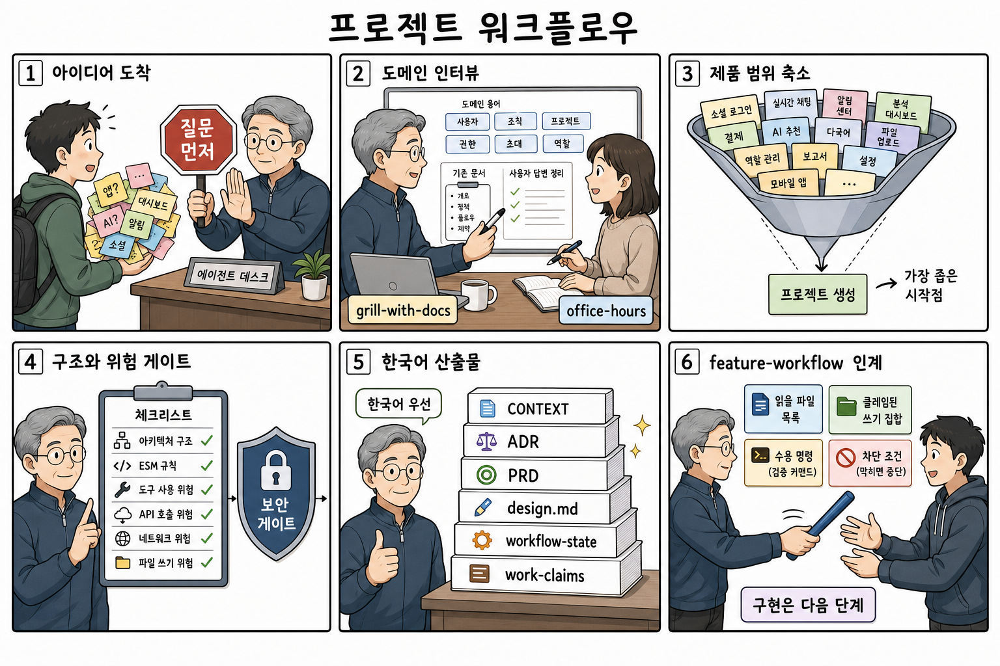

프로젝트 워크플로우 comic
막연한 아이디어를 바로 구현하지 않고 질문, 제품 범위 축소, 구조와 위험 gate, 한국어 우선 산출물, feature-workflow 인계로 정리하는 흐름을 6컷으로 압축했다.

요약
project-workflow는 raw idea를 곧바로 코드로 바꾸는 스킬이 아니다. 먼저 local instructions와 기존 문서를 읽고, 도메인 질문과 product challenge를 통과한 뒤 durable setup docs와 handoff를 만든다.
원본 기준
- 첫 응답에서는 구현, PRD, issue backlog, architecture handoff를 질문 gate 전으로 앞당기지 않는다.
- 호출 가능한 primitive는 실제 호출하고, 없으면
fallback으로 남긴다. - 도구, MCP, external API, file write, network, untrusted content는 위험 gate에 기록한다.
- 초기 셋팅 산출물은 사용자가 다른 언어를 지정하지 않으면 한국어 우선이다.
Panel Transcript
-
1. 아이디어 도착
막연한 sticky note 더미 앞에서 에이전트가
질문 먼저gate를 세운다. Source anchor: 핵심 계약, 첫 응답 기준. - 2. 도메인 인터뷰 기존 문서, 도메인 용어, 사용자 답변을 정리한다. Source anchor: interview gate, dependency invocation contract.
- 3. 제품 범위 축소 많은 기능 후보를 가장 좁은 시작점 하나로 줄인다. Source anchor: 핵심 계약, default flow.
- 4. 구조와 위험 게이트 architecture, ESM, tool/API/network/file-write 위험을 보안 gate로 점검한다. Source anchor: 핵심 계약, artifact map.
-
5. 한국어 산출물
CONTEXT, ADR, PRD,design.md,workflow-state,work-claims를 한국어 우선으로 묶는다. - 6. feature-workflow 인계 read files, claimed write set, acceptance commands, blocked conditions를 가진 phase card를 다음 구현 단계에 넘긴다.
검증 기록
imagegen으로 실제 raster comic을 생성했다.- 세부 정책 문구는 이미지 안 텍스트에만 의존하지 않고
comic-brief.json과 transcript에 보존했다. - HTML은 외부 script, 외부 asset, inline event handler 없이 repo-local 상대 경로만 사용한다.
사용 판단
이 comic은 원본 SKILL.md를 대체하지 않는다. 설치 화면, 리뷰, 온보딩에서 큰 흐름을 빠르게 설명하고, 세부 기준은 원본과 comic-brief.json으로 확인한다.